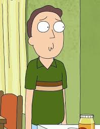
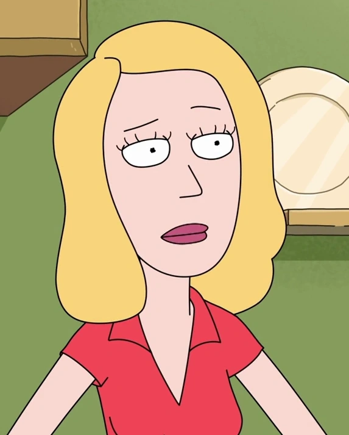

Main character
Rick Sanchez

A genius scientist and alcoholic whose inventions and experiments serve as the basis for the episodes. The grandfather of Morty Smith and Summer Smith, and the father of Beth. Rick was absent from the family for years, until he finally returned before the Pilot episode to live with the Smith family, much to the disapproval of Jerry. He currently resides in the garage of the Smith house where his entire laboratory is based. Here, he builds new inventions, travels to other dimensions, and tests things out on forms of alien life.
Morty Smith

Rick's impressionable and socially awkward teenage grandson who is often dragged along on his grandfather's escapades. Morty is a wimpy and nervous wreck who desperately tries to keep his sanity when taken on the bizarre and terrifyingly mind-bending adventures that Rick takes him on, which is already big enough of a problem as he already struggles to fit in at his own high school.
Jerry Smith
Morty's insecure father, whose disapproval of Rick's influence on Morty only deepens his marital troubles with Beth. Jerry constantly finds himself to be in a failing marriage with his wife as they always argue and never express the love for each other that most parents do.
Beth Smith
Morty's holier-than-thou mother who is a cardiac surgeon for horses. Beth seems to have problems in her marriage with Jerry and usually considers leaving him for another guy.
Summer Smith

Morty's angst-ridden older sister who occasionally joins Rick on his adventures. She only cares about her friends and social life at school and is easily annoyed by her family, though she sometimes becomes jealous of Morty's relationship with Rick.